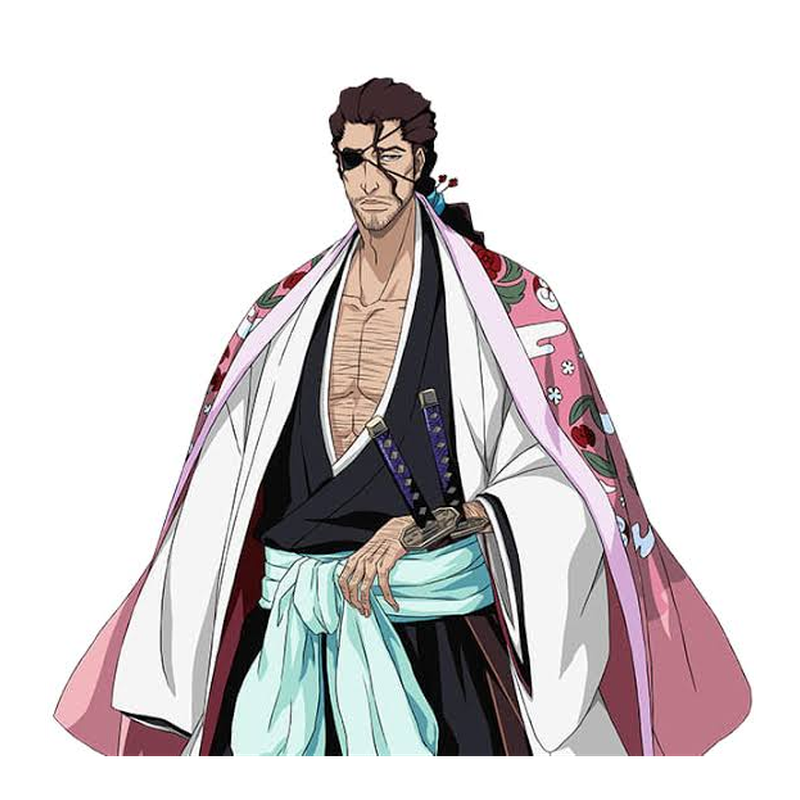
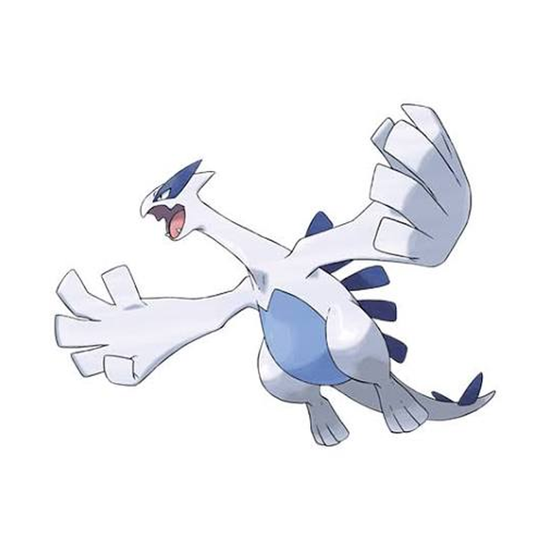
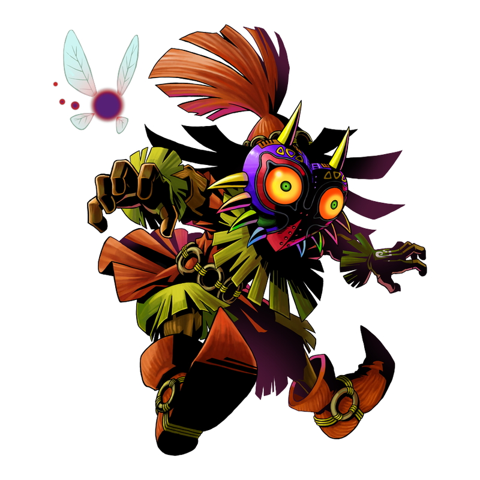
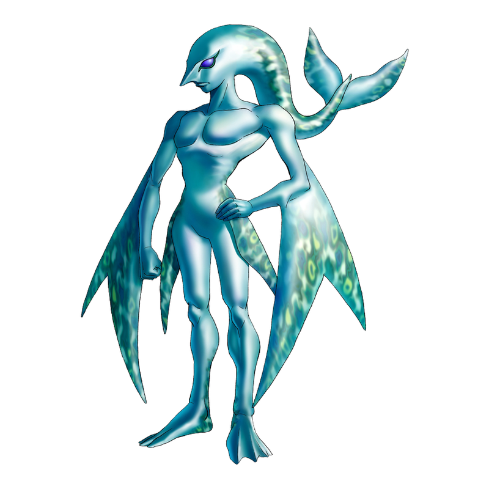

Capitão da 1ª Divisão e Comandante-Chefe da Gotei 13. É descontraído, preguiçoso e brincalhão, mas extremamente habilidoso e sério quando necessário. Sua Zanpakutō é a Katen Kyōkotsu.

Pokémon lendário do tipo Psíquico/Voador, conhecido como o guardião dos mares. Possui grande poder e é capaz de controlar tempestades e correntes marítimas.

Personagem de The Legend of Zelda: Majora’s Mask. É um ser travesso que, após obter a Máscara de Majora, passa a causar o caos em Termina.

Uma raça de seres aquáticos do universo The Legend of Zelda. São excelentes nadadores, vivem próximos à água e geralmente possuem aparência humanoide com características de peixes.